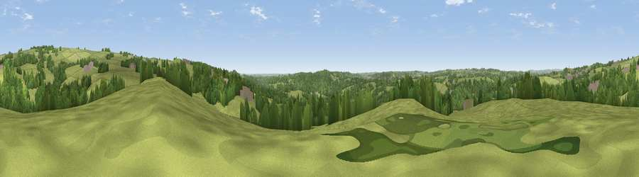

Viewpoint near Whiston
#29934 in England · top 50% of its area beats it · near WhistonThe view, rendered

A 360° render of this exact spot computed from the terrain model, tree cover and land cover — summer colours, afternoon light, calibrated against photographs of famous viewpoints. Real trees, hedges and buildings will differ in detail.
The panorama
Grey silhouette: terrain skyline in each direction (720 bearings, Earth curvature and refraction included). Dashed green: skyline with trees (+15 m) and buildings (+8 m) as obstacles. Blue strip: how far the ground is visible on each bearing.
Where the view opens
Wedge length = distance to the farthest visible ground on that bearing (vegetation-aware). Rings at 10, 25 and 50 km.
What fills the view
64% grassland · 32% woodland · 3% built-up · 1% cropland
Angular shares of the visible panorama (visual magnitude), not map area. Landscape diversity 0.35 (0–1 Shannon).
Key numbers
More beautiful places nearby
The staircase of upgrades: each row has a higher view potential than everything closer. Driving times are estimates from straight-line distance, calibrated against real road routing — check an actual route before setting out.
| Place | Direction | Drive | Score |
|---|---|---|---|
| Ipstones Edge | NNE · 3 km | ~7 min | 60.0 |
| Viewpoint near Oakamoor | SE · 4 km | ~9 min | 62.9 |
| Viewpoint near Cauldon Lowe | E · 5 km | ~11 min | 71.9 |
| Viewpoint near Wootton | E · 6 km | ~13 min | 74.8 |
| Tissington Hill | ENE · 13 km | ~23 min | 75.5 |
| Viewpoint near Mow Cop | WNW · 20 km | ~34 min | 78.9 |
| Viewpoint near Mow Cop | WNW · 20 km | ~34 min | 80.2 |
| Viewpoint near Harthill | W · 53 km | ~74 min | 80.5 |
53.02500, -1.94815 · source: screening · position refined by local search. Computed location — check access rights before visiting.